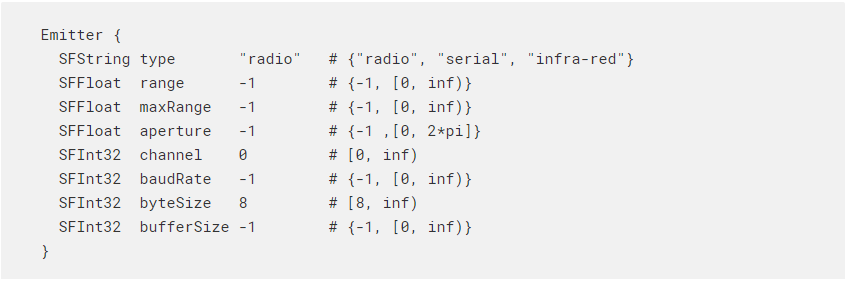
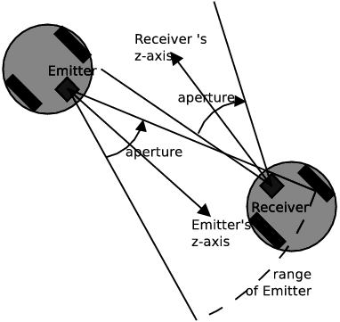

Display 顯示 <<
Previous Next >> Assiganment3
Emitter 發射極
發射極

Description 描述
“發射器”節點用於建模無線電，串行或紅外發射器。 必須將“發射器”節點添加到機器人或主管的子代中。 請注意，發射器可以發送數據，但不能接收數據。 為了模擬兩個機器人之間的單向通信，一個機器人必須具有發射器，而另一個機器人必須具有接收器。 為了模擬兩個機器人之間的雙向通信，每個機器人都需要同時具有發射器和接收器。 請注意，消息永遠不會從一個機器人傳輸到自身。
Field Summary 領域摘要
-
類型(type): 信號類型：“無線電”，“串行”或“紅外”。傳輸類型為“無線電”（默認）和“串行”的信號時不會考慮障礙。但是，“紅外”類型的信號確實考慮了發射器和接收器之間的潛在障礙。具有定義的邊界對象的任何固體對象（固體，機器人等）都可能成為“紅外”通信的潛在障礙。發射或接收機器人的結構本身不會阻止“紅外”傳輸。當前，“無線電”和“串行”類型之間沒有實現上的區別。
-
範圍(range): 發射球的半徑（以米為單位）。如果接收方位於發射範圍內，則它只能接收一條消息。範圍的值-1（默認值）被視為無限範圍。
-
最大範圍(maxRange): 定義範圍允許的最大值。該字段定義可以使用wb_emitter_set_range函數設置的最大值。 maxRange的值-1（默認值）被認為是無限的。
-
孔徑(aperture):發射錐的張開角（弧度）；僅用於“紅外”。圓錐體的頂點位於發射器坐標系的原點（[0 0 0]），並且圓錐體的軸與發射器坐標系的z軸重合。 “紅外”發射器只能將數據發送到當前位於其發射錐內的接收器。 -1的孔徑（默認）被認為是無限大的，這意味著發射的信號是全向的。對於“無線電”和“串行”發射器，將忽略此字段。有關範圍和光圈的圖示，請參見此圖。

-
頻道(channel): 傳輸通道。這是“紅外線”發射器的標識號或“無線電”發射器的頻率。通常，接收器必須使用與發射器相同的通道來接收發射的數據。但是，特殊頻道-1允許在所有頻道上廣播消息。通道0（默認）保留用於與物理插件通信。對於機器人之間的通信，請使用正數通道號。
-
波特率(baudRate): 波特率是以每秒位數表示的通信速度。 -1的baudRate（默認值）被視為無窮大，並導致數據立即（在一個基本時間步內）從發射器傳輸到接收器。
-
字節大小byteSize: 字節大小是傳輸一個字節信息所需的位數。 通常為8（默認值），但如果使用控制位，則可以更多。
-
緩衝區大小(bufferSize): 指定傳輸緩衝區的大小（以字節為單位）。 發射器中排隊的數據包中的字節總數不能超過此數目。 -1的bufferSize（默認值）被視為無限的緩衝區大小。
Display 顯示 <<
Previous Next >> Assiganment3